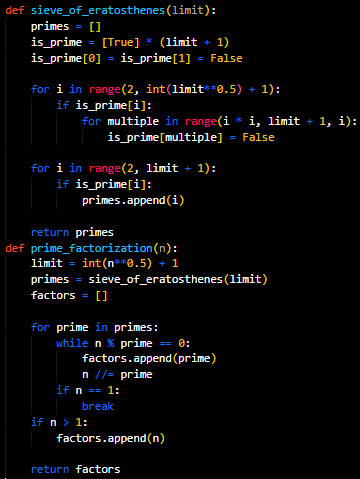

[ADS-FINAL-PREP] 2. Prime Factorization
Prime factorization is the process of representing a number as a product of prime numbers. Prime numbers are numbers greater than 1 that are divisible only by themselves and 1 (for example, 2, 3, 5, 7).
Definition
The prime factorization of a number N can be written as:
N = p₁^(e₁) · p₂^(e₂) · ... · pₖ^(eₖ)
Where p₁, p₂, ..., pₖ are the prime factors of N, and e₁, e₂, ..., eₖ are their respective exponents.
Example: The number 120 can be factored into prime numbers as: 120 = 2³ · 3 · 5.
1. Trial Division
- Description: We check the divisibility of the number N by prime numbers sequentially, starting from 2 up to √N. If the number is divisible, we record the factor and continue with the quotient.
- Steps:
- Start with p = 2.
- While p ≤ √N:
- If N mod p = 0, then p is a factor. Divide N by p.
- Increment p by 1 when division is no longer possible.
- If N > 1 after the loop, then N itself is a prime factor.
- Complexity: O(√N)
Example: Factorizing 60:
- 60 mod 2 = 0 → 2 (first factor). Divide: 60 / 2 = 30.
- 30 mod 2 = 0 → 2. Divide: 30 / 2 = 15.
- 15 mod 3 = 0 → 3. Divide: 15 / 3 = 5.
- 5 > √5, add 5. Result: 60 = 2² · 3 · 5.
2. Sieve of Eratosthenes
- Description: An efficient method for finding all prime numbers up to N, which can aid in factorization.
- Algorithm:
- Create an array of numbers from 2 to N.
- Cross out all multiples of 2, then 3, and so on up to √N.
- The remaining numbers are primes.
- Application: Use the discovered prime numbers to divide N.
- Complexity: O(N log log N) to construct the sieve.
3. Pollard’s Rho Algorithm
- Description: A fast factorization algorithm for large numbers.
- Idea: Uses a pseudo-random search via the function f(x) = (x² + c) mod N to find divisors.
- Steps:
- Choose a starting seed x₀ and function f(x).
- Generate the sequence x₁, x₂, ...
- Find the greatest common divisor (gcd) between the differences of numbers in the sequence and N.
- If gcd > 1, it is a non-trivial factor of N.
- Complexity: On average O(N^(1/4)).
- Application: Used in cryptography.
4. Fermat's Factorization Method
- Description: Based on representing an odd number N as the difference of two squares:
N = a² - b² = (a - b)(a + b)
- Steps:
- Set a = ⌈√N⌉.
- Compute b² = a² - N.
- If b² is a perfect square, then N = (a - b)(a + b).
- Repeat recursively for the resulting factors until only prime numbers remain.
- Complexity: O(√N).
5. Lenstra Elliptic-Curve Factorization
- Description: A modern factorization method using elliptic curves. It is especially efficient for finding small prime factors of large composite numbers.
- Complexity: Depends on the choice of the curve and the size of the prime factor.

If you noticed a mistake or copyright issues, please contact: lebroskiofficial@proton.me